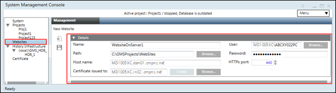

Website in SMC
Websites are hosted on the computer where the IIS web server is running. You must have a website configured in SMC in order to create web services and web applications, such as those used for Flex Client or Advanced Reporting.
- For a local IIS deployment, do these steps on the Desigo CC server station.
- For a remote IIS deployment, do these steps on the separate Client/FEP station that hosts the IIS server.
- IIS is enabled on the computer that will host the website.
- In SMC select the Websites node, and on the toolbar click Create website.
(or, to modify an existing website, select it and click Edit) - In the Host name field, enter the computer running the IIS web server. This field is prefilled to the machine on which you are running SMC.
- Click Browse... to select the website User, and enter that user's Password.
If that user is not already a member of the IIS Users group, you will later be prompted to add it.
NOTE: In case of a remote IIS deployment, the website user must exist on the Desigo CC server as well as on the Desigo CC Client/FEP station that hosts the IIS server. - A Certificate is always required, because websites are https only. Client browsers that connect to web applications under this website will need to be able to recognize the certificate.
- If a self-signed certificate was previously created and set as default, the field is prefilled with that certificate.
- Otherwise you can click Create to generate and set a self-signed certificate.
- Alternatively you can Browse.. and select a host certificate.
- When finished click Save, and click OK to start creating the website.
- The website is automatically started.

For more information about website configuration refer to the help page Websites and Web Applications, section Websites.
For more information about certificate configuration refer to the help page Setting the Certificates as Default Certificates.